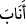

5- Süleyman’ın hükümdarlık sırrı bu yüzükteydi. Öyleyse, -kendi ifâdelerine göre-
yüzüğün denize atıldığını düşünürsek, bu cinnin Süleyman’ın tahtına yüzüksüz olarak
oturmuş olması nasıl mümkün olur?
Keşfü’l-esrâr’da şöyle der: “Süleyman’ın hükümdarlık sırrı, yüzüğündeydi. Bu
yüzüğün taşı kibrît-i ahmer idi”.
‘Ikdü’d-dürer’de ise şöyle der: Bu yüzük Âdem’in yüzüğü olup Allah onu cennetten
çıkarılmazdan evvel takmış, sonra da Arş’ın ayaklarından birine bağlamıştı. Bu yüzüğün
ilk satırında Bismillâhirrahmânirrahîm; ikinci satırında Lâ ilâhe illâllah; üçüncü
satırında ise, Muhammedün Rasûlullah yazılıydı. Cebrâil (a.s.) bunu Hz. Süleyman’a
(a.s.) indirince, heybetinden tüm kâinat sarsıldı. Süleyman yüzüğü takar takmaz
insanların görme alanından çıktı. Oradakiler:
-“Ey Allah’ın Peygamberi! Cemâlinizi müşâhede ederek onurlanmak isteriz.” dediler.
O da cevaben:
- “Allah’ı zikredin” buyurdu. Oradakiler Allah’ı zikredince, Süleyman’ı gördüler.
Yâni tesir Allah’tan olup Süleyman bu tesirin tezahür etmesini sağlamış olmaktadır;
yüzük ise hakikatte sadece bir vâsıtadır.
Allah Teâlâ, Süleyman’ın hükümdarlık sırrını, bir yüzüğün taşına koyarak Süleyman’a
şunu göstermiştir: Vermiş olduğum bu hükümdarlık, sana vermediklerimin yanında,
sadece bu taşın diğer taşlar yanındaki değeri kadar bir değere sâhiptir. Çünkü Allah
katında dünya hükümdarlığı, herhangi bir taş kadar değerlidir. Allah dilediklerini
dilediği şekilde aziz eder.
35. Süleyman: Rabbim! Beni bağışla; bana, benden sonra kimsenin ulaşamayacağı
bir hükümranlık ver. Şüphesiz sen, dâimâ bağışta bulunansın, dedi.
“Süleyman: Rabbim!” durumuma uygun olmamakla birlikte benden sâdır olmuş
bulunan o sürçmeyi, zelleyi affet ve “beni bağışla;”
Bu âyet, yukarıda geçen “yöneldi” anlamına gelen (
) ifâdesinden bedel olup bu
yönelişi açıklamaktadır.
Süleyman (a.s.) peygamber ve sâlih kulların yolundan giderek, Allah Teâlâ’dan
hükümdarlık hibe etmesini istemezden önce kendisini affetmesini diliyor ki bu hem
peygamber ve sâlih kulların yolundan gitmek içindir; hem de hibe isteğinin kabûlünü
daha fazla sağlar.
“Bana, benden sonra” yâni kıyamete kadar hiç bir “kimsenin ulaşamayacağı” ve
hiçbir yaratılmışa nasip olmayacak “bir hükümranlık” ve tasarruf gücü “ver.” Böyle